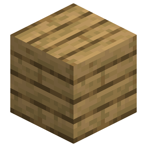

About
The sheep plushie is a decorative block inspired by the various sheep mob variants!
Crafting
The sheep can be crafted with planks and string:




Extension
To extend any sheep simply place the sheep while targeting another sheep of the same type. There is a video demo showing this at the bottom of this page!
Breaking
Rope ladders can be broken with any item or by hand, but the axe is the fastest! Any sheeps that are unsupported will break when the supporting block is removed.
Planter Box

| Renewable | Yes (Crafting) |
| Stackable | Yes (64) |
| Tool | Any tool, but the axe is the quickest! |
| Blast Resistance | 0.4 |
| Hardness | 0.4 |
| Luminous | No |
| Transparent | No |
| Catches fire from lava | No |